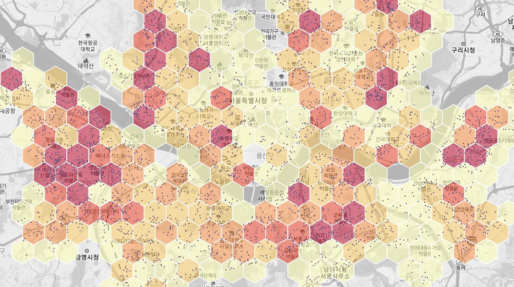

헥사곤 비닝¶
헥사곤의 크기와 범위를 설정하여 헥사곤 그리드를 생성하고 각 셀마다 피처의 개수를 계산합니다.
Syntax
HexagonalBinning (SimpleFeatureCollection features, Expression weight, ReferencedEnvelope bbox, Double size, Boolean validGrid) : SimpleFeatureCollection
Input Parameters
Identifier |
Description |
Type |
Default |
Required |
features |
값을 합산할 입력 포인트 레이어입니다. |
SimpleFeatureCollection |
✓ |
|
weight |
가중치 값으로 사용될 숫자형 필드 또는 표현식입니다. 설정 시 이 값의 합이 계산됩니다. |
Expression |
||
bbox |
격자 생성 범위입니다. 범위가 지정되지 않으면 입력 레이어의 범위와 좌표체계를 기본값으로 합니다. |
ReferencedEnvelope |
||
size |
헥사곤 격자의 크기로 중심점에서 꼭지점까지의 거리입니다. 단위는 입력 레이어의 좌표계 단위입니다. |
Double |
✓ |
|
validGrid |
값이 계산된 유효한 격자만 반환됩니다. |
Boolean |
true |
Process Outputs
Identifier |
Description |
Type |
Default |
Required |
result |
출력 레이어입니다. |
SimpleFeatureCollection |
✓ |
Constraints
bbox가 Null인 경우 features 데이터의 Extent를 사용한다.
weight 식이 주어진 경우 weight의 값을 누적한다.
size는 0보다 커야 한다.
validGrid 파라미터의 기본값은 True이며, 포인트의 개수가 0 이상인 그리드만 반환한다.
Examples
서울시의 아파트 포인트 데이터를 1000미터 크기의 Hexagon을 생성 후 시각화한 결과입니다.
